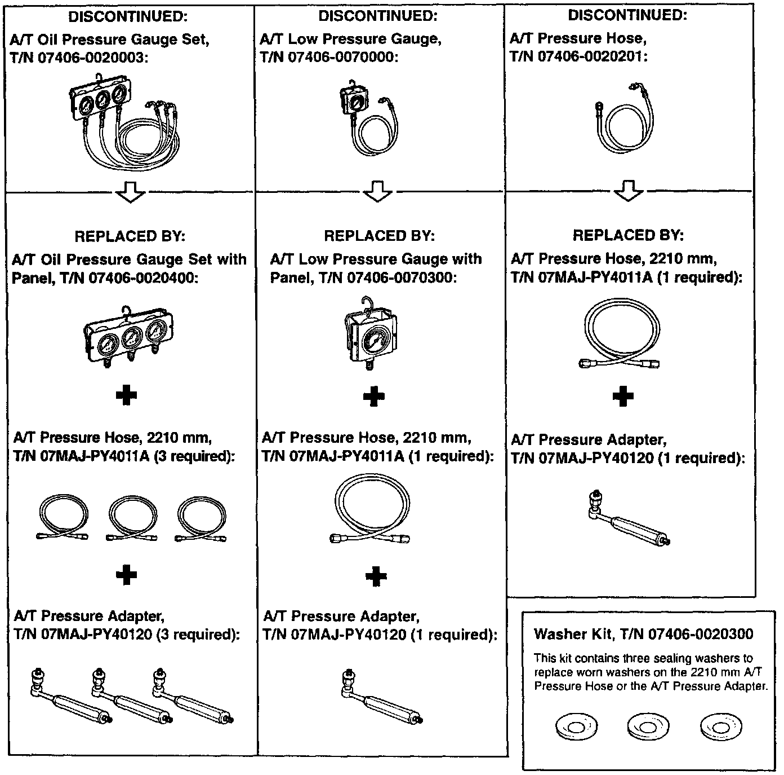

A/T Oil Pressure Testing Tools Update
March 4, 1997BULLETIN NO.
97-009
YEAR
ALL
MODEL
ALL
VIN APPLICATION
ALL With Automatic Transmission
Automatic Transmission Oil Pressure Testing Tools

To simplify special tool applications among model lines, three A/T oil pressure testing tools have been discontinued. The chart shows which tools have been discontinued and which tools replace them.